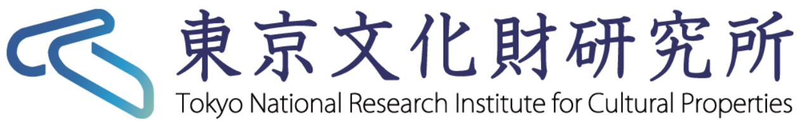
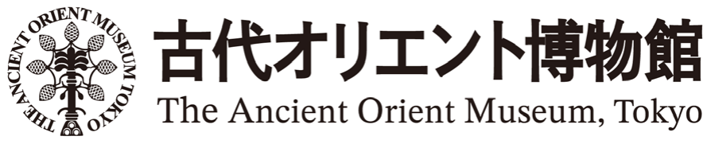
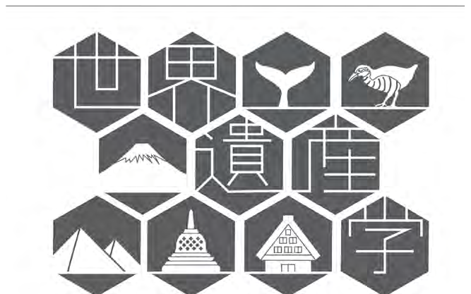
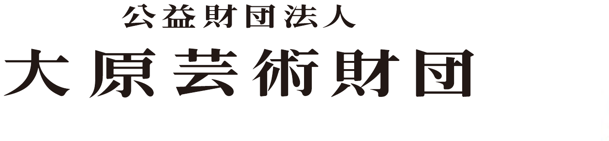
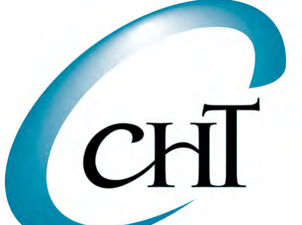

CRE 26 TokyoOpening Ceremony
Welcome & Opening Ceremony
Opening Ceremony Chair — So Miyagawa (University of Tsukuba)
By early-career researchers.
For early-career researchers.
Every year since 2000 — Oxford, 40 participants, 5 universities.
Today: the world's Egyptology, in one room.
…and the 15-member CRE Japan Committee of early-career researchers





every abstract double-blind peer-reviewed
54 long·22 short·23 posters·4 keynotes
Univ. of Tsukuba, Tokyo Campus
Waseda University
Minpaku, Osaka
15 July — excursion to Kamakura & Enoshima
Opening Remarks
開会の挨拶
CRE 26 Tokyo Organising Committee · University of Tsukuba
Address from the Supporting Institutions
協力機関代表挨拶
President, University of Tsukuba · 筑波大学長 永田恭介
Greetings from the CRE Permanent Committee
CRE 常任委員会挨拶
CRE Permanent Committee
Events & Venue Information
イベントのご案内・会場のご注意
Tokyo National Research Institute for Cultural Properties
ようこそ東京へ
Let the first CRE in Asia begin!